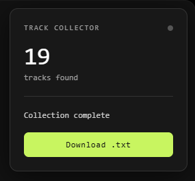

Yandex Music Parser
JavaScript-скрипт для парсинга (сбора) треков из плейлиста "Мое любимое" в Яндекс Музыке.
C#
WinForms
.NET

> Об утилите
Yandex-music-parser — это cкрипт, который автоматически прокручивает страницу, собирает названия треков и имена исполнителей, а затем позволяет скачать их в виде удобного текстового файла.
Скрипт сециализируется на разделе "Мое любимое". Правильная работа с другими альбомами не гаранируется.